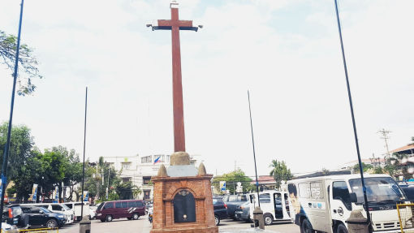
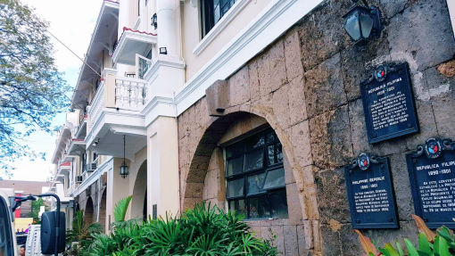
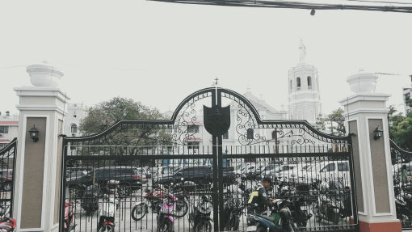

The Minor Basilica of Our Lady of the Immaculate Conception is also a spectacular piece of architecture, the predominant feature of the Cathedral-Basilica is the semi-circular arch in its lower part that boasts of its Baroque design. The ornamentation is moderate; the massing is well balanced and the symmetrical movement of the columns and openings are almost Neo-Classic.